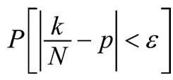
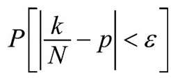
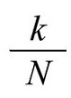
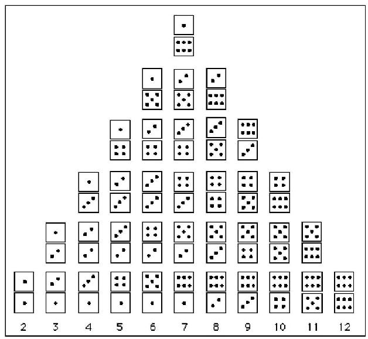
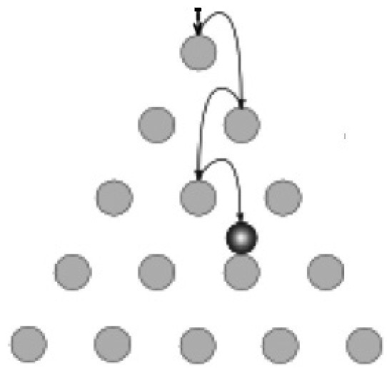
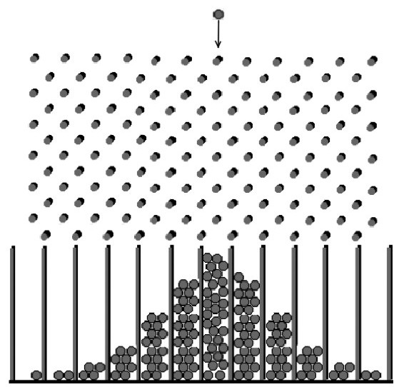
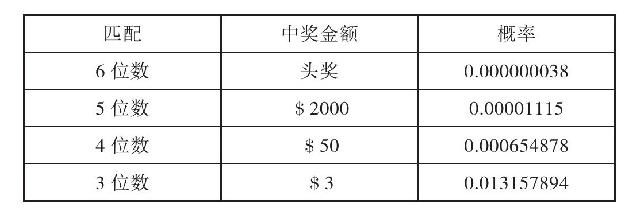

——电影《动物饼干》
怎样能利用数学定律预知未来呢？抛出的双骰子捡起来再抛，骰子不可能记住上一次是哪面朝上。如果骰子没有问题，投掷的时候没有作弊，我们无法预测结果，但通过多次投掷，我们可以肯定，双骰子落地后两个数字相加等于7的情况比其他情况更常见。运用骰子的几何结构和一点算术知识可以解释：两个骰子落地时任何一面朝上的两个正数相加等于7的情况多于任何其他两个数字相加的和数的情况。
数学的概率概念相对较新，可以追溯到16世纪。16世纪前数学还没有涉及不确定性问题。自然哲学家和数学家更热衷于研究生活中的重要问题，其中有些研究数论和几何学等抽象概念，有些研究生活中实践性和功能性更强的问题，如测量和建筑问题（尤其是教堂）。开始从数学角度研究可能性问题的要属G.卡尔达诺的《论赌博》，这本书稿大约写于1563年，内容包括可能性属性和现代概率的基本要素[37]。但这本书100年以后才得以出版。
G.卡尔达诺是米兰的内科医师、数学家和赌博玩家。我们认识他主要是他1545年出版的著作《伟大的艺术》。该书主要描述了直至那时的代数方程理论。《论赌博》一书共15页，从数学和哲学角度探讨了赌博，是作者的随笔。卡尔达诺无意出版。但《伟大的艺术》书中含有研究巧合频率的简易工具，结合N次中有k次成功的多种计算方法，该书被认为是概率论、期望值、均值、频率分配表、概率可加性和计算的奠基石。它甚至提出了一个数学定律，后来演变成著名的弱大数定律。该定律告诉我们，如果实验的次数N无限大，实际均值（事件发生前完全未知）和数学计算出来的均值之间差异则很小。
准确描述起来会有些抽象：假定N可以无穷大，平均成功率不同于p的概率P则接近于0，用现代的符号表示为：ε代表所选的任何小数字，当N增大，

趋向1。[38]刚碰巧看到这行符号的读者，请允许我进一步解释。我们用符号讨论方括号中描述的事件概率。例如，P[下一个7月4日飓风将袭击中央公园]表示飓风下一个7月4日将袭击中央公园的概率。因此
指
和P之差的绝对值的概率。该绝对值小于选取的任何数字ε。该原理说明了均值的变化趋势。大家一定想知道随机事件（每一个结果绝对从未出现过）如何计算出接近数学计算值的均值。遗憾的是，这个定律——即使在今天——仍旧容易与有些人称作的均值定律相混淆。均值定律根本不是定律，而是荒谬的幻想。它指出，如果你抛硬币的次数足够多，终究会有一半次数硬币正面朝上，一半次数硬币反面朝上。除非“足够多”指无限长，否则这个“定律”根本就是错的。
的确，弱大数定律结果令人惊讶。但更令人震惊的是它可以用数学证实。这表明随机事件——事件结果千变万化且从未重复——有可能接近于数学计算值的均值。数学家可以告诉我们现实世界决定性现象：桥梁和大坝结构遵从数学计算；飞机根据数学计算出行；窗户根据数学计算破裂；玻璃按规定的共振频率震碎；当上空的气压低于下方气压飞机机翼抬高。但当谈到可能性，这些联系似乎更加令人费解。骰子？我们怎么可能知道它每次落地时哪面朝上？
卡尔达诺留给了我们一个方法。在《论赌博》之前，运气——不管是好的还是坏的——掌握在命运女神手里。即使是在数学的多个领域都取得很大成就的希腊人都没有提出赌博赔率的数学理论。他们只是抛骰子，把命运交给运气或某位神。当然，他们知道，与其他数字相比，某些数字出现的可能性更大。毋庸置疑，他们知道数字7比其他数字出现的次数更多。他们只需记录7出现的次数。但据我们所知，他们对预测性概率一无所知。
卡尔达诺的随笔埋下了关于可能性科学的种子。我们知道可观测的事实能够量化可能发生的事情。按照亨利·庞加莱的话说，我们知道了人与人，人甚至与神的机会都是均等的。
我们要记住，在卡尔达诺的时代，还没有人很好地研究可能性的原因。例如，数学没有研究为什么有些数字比其他数字更频繁出现。卡尔达诺去世半个世纪后，伽利略写了一篇短小的论文论述投掷三个骰子的概率问题，揭开了这个秘密，不过他不太可能知道卡尔达诺的《论赌博》。伽利略列出了所有组合，发现三个骰子落地面数字相加等于10有27种不同的方法，11也有27种方法，但数字相加等于9或12只有25种方法。[39]
有经验的赌徒当然知道这一点。他们从长期的经验和观察中获得了一些民间知识，对骰子投掷结果有深刻的了解。他们对赔率有本能的认知，知道对于三个骰子，10和11出现的频率要高于其他数字。但本能知道和数学解释之间有差别。如果有对数学的信心，你几乎可以依靠你的运气。对于知道如何计算数学赔率的人来说，决策不再是冒险。从长远来看，这些决策几乎百分之百正确，尽管偶尔也会有不确定。
双6点和概率的产生
数学概率的核心理念可以追溯到1654年的冬天。那年冬天巴黎异常寒冷。塞纳河都结冰了。据报道，有人在塞纳河上溜冰，有人在教区牧师向穷人派发面包的街头烧火取暖。30年的欧洲宗教战乱耗尽了法国的国库，全国经济萧条。法国被迫增加工人阶层的税收，但征税员诡计多端，征收的税收只有少量进入国库。当时的国王路易十四属于贵族，他积累了巨额财富。这群富人贵族终日饱食，无所事事，转战巴黎所有赌场。[40]数学概率论在1654年的冬天应运而生，并迅速发展。
尽管赌博至少可以追溯到洞穴人抛骨头（掷骰子），到17世纪中期它已成为法国社会主要的消遣方式。除了从错误百出的算术课本上发现的简易方法，和方济会弗拉·卢卡·帕乔利1494年出版的代数教材《神学总论》，当时法国仍没有关于可能性的重要数学成果。但1654年卡尔达诺的《论赌博》一书揭示了为超过五成机会获得双6点，赌博者抛掷双骰子的最少次数的线索[41]。
数学哲学家布莱兹·帕斯卡尔为了找到答案曾看过《论赌博》，但他不相信这个方法。后来春夏期间他卧床不起，写信给他的律师兼数学家朋友皮埃尔·费尔马[42]。他们一起得出结论：抛24次骰子中双6点的概率稍小于50%，而抛25次中双6点的概率稍大于50%[43]。
帕斯卡尔知道一副骰子的2点和双6点出现的可能性很小，为1:36，但7点有1:6的概率（图5.1）。他知道，计算非双6点的可能性要更容易，即1-1/36，或35/36。他还清楚每一抛掷和前一次相互独立，两个独立事件发生的概率等于每个事件两两概率之积。因此抛n次中非双6点的概率为（35/36）n。他计算得出（35/36）24=0.509，（35/36）25=0.494，从而得出结论，抛24次骰子中双6点的概率稍小于50%，而抛25次中双6点的概率稍大于50%[44]。

图5.1 每列骰子的对数代表每个数字出现的次数
概率的根基来自该副骰子和其他类似问题。如此随机的外部世界仅仅通过一个图表就能概括。静下心来想一想。如果某一事件受某个原因影响，将有超过五成的可能性使得该原因推动事件未来发展的方向。如果事件未受任何原因影响，事件未来发展方向将无任何偏向地自然发展。不管是否有原因，超过五成的可能性将为无可预知的侥幸或巧合打开一扇门。我们可以用高尔顿钉板作为模型阐释这一现象（图5.2）。

图5.2 高尔顿钉板（垂直于页面的15根销钉）
高尔顿钉板模拟了由公平机会决定的行为。球从一套销钉自由落下，准确击中第一根销钉的顶端，之后球有一半的机会弹向左边或右边。如果球弹向右边，它将落到下面更低的钉上，要么再一次击中销钉的顶端，要么落到左边或右边。理论上来说，球能准确击中销钉的顶端。但实际上永远不会发生这种事。为什么呢？首先，我们必须考虑销钉的顶端指什么，是指钢管顶端的分子结构吗（假定销钉是钢做的）？没这回事。因此实际上球有理由落到左边或右边。理由包括球运动过程中极小的风力，或者球落到销钉上时产生的极小震动，或者下落时碰撞到的微小尘粒。实际上，在球碰到销钉后有数百个变量决定球弹跳的方向。甚至还要考虑球落到销钉上时的分子凹痕和碰撞的弹力。
弗朗西斯·高尔顿爵士是19世纪英国遗传学家，他建构了以上梅花点式钉板，就像骰子上的5点，旨在展示物理事件取决于顺风。在高尔顿的绝对完美钉板实验中，球必须准确落在销钉的顶端，它到底落向左边或右边的销钉上，这好像抛硬币。现实生活中，或许是由太平洋上扇动翅膀的蝴蝶或爱达荷玉米地里放屁的牛来决定。每一次弹跳前，前一次的结果已经过去，球不再记得结果，因此每一弹跳都如同第一次。不过累积的结果似乎考虑到了所有前面的情况。
我们从数学的角度来分析。假设球下落时击中四层钉子。球向左向右弹跳的机会均等，因此落到销钉下的球累积形成钟形曲线。计数球下落的途径可以证明这一点。假设球落下，我们用字母L和R标记球弹向左边（L）或右边（R）。可能的结果如下：
LLLL
LLLR,LLRL,LRLL,RLLL
LLRR,LRLR,LRRL,RLLR,LRLR,RRLL
LRRR,RLRR,RRLR,RRRL
RRRR
可以看出，混合字母组合多于同一字母组合。由于球弹向左边或右边的机会均等，所以球倾向于落在以中间为轴的两边（图5.3）。原因在于：在连续12次L和R的选择中，6个L和6个R的次数超过L和R的任何其他次数。

图5.3
每次碰到销钉，球落到左边记为-1，落到右边记为+1。球向下滚完12行钉子后将最后落到最下方的12个槽中的其中一个。
例如，图5.3最左边的球的数量最后累积为-12。每个球最后的位置代表独特的累积结果。球倾向于向中间累积。但是，尽管很多球落入了中间两个槽中，其他10个槽中的球数总数更多。
在图5.3中，球的总量代表最后累积值140——左边5个槽中落入31个，右边5个槽中落入55个。中间两个槽共54个。的确，任一球的最后位置不能表明它过去的路径。但是有两个关键点要注意：前两行销钉限制了结果。如果第一行为钉头，第二行为钉尾（或者反过来），最后累积值将小于12，大于-12。约60%的球落入了中间两槽之外的槽中。球可能从左边开始下落，最后落到右边的槽中，但也很有可能球一开始离左边很远，最终回到右边槽的机会也降低。
如今，概率论向理论和实证研究方面发展。例如，实证方面有研究运用大样本预测概率，理论研究如利用科学原理通过现有的事实确定概率，如对称性或物理理论。我们知道根据骰子本身的立方对称原理能得出一个完美的立方体骰子中1点的概率。但一个普通的骰子中1点的概率可能需要通过多次抛掷，并标记出中1点的次数才能计算出来。这个概率可能远远大于或小于1/6。
因此很多时候取决于骰子本身。棋盘游戏的骰子通常制作粗糙。快艇游戏为抛掷骰子游戏，自20世纪50年代流行至今。游戏规则是抛5个骰子，5个骰子点数相同为“快艇”。中“快艇”的赔率为1295:1。[45]你或许以为要抛1296次才能中奖。但如果全世界许多人都来抛，可能第一抛就能中奖。这正是布莱迪·哈伦想到的。他在他的网站上要求数百个追随者玩“快艇”游戏，并将中奖瞬间记录下来。结果有些人抛几次后就中奖“快艇”，更多的人抛几百次后中奖。[46]
在18世纪要获得事件发生的可能只能通过计数：计算出期望发生和可能发生事件总数之间的比例。骰子6面任何一面都可能朝上，因此骰子任一面的概率p为1/6。但伯努利提出了不同的问题。他希望考虑到疾病和天气问题，从而希望包括其他科学问题。[47]
伯努利定理
数学家们经常对抽象原理的神奇魅力惊奇不已。当理论能漂亮地解释自然界现象时，他们感动不已。瑞士数学家雅各布·伯努利在看到卡尔达诺的《论赌博》后证明了弱大数定律，他为此雀跃欢呼。这条定律的确非常神奇，它告诉我们，尽管大自然千变万化，神秘莫测，但我们仍能巧妙地揭开它的秘密[48]。它给我们提供了解决不确定性的神奇方法。
雅各布·伯努利于1705年去世，他将他大量的未完成的手稿留给了他的侄子尼古拉斯·伯努利。接下来的8年，尼古拉斯·伯努利继续叔叔的研究，最终出版了《猜度术》，这本开创性的著作即使到今天仍被视为数学概率论早期最重要的成果。
雅各布·伯努利去世后，他的著作《猜度术》1713年出版，该书视角独特，它以装满黑白币的大壶为例，讲述在不知道壶中有3000枚白色币和2000枚黑色币的情况下，如何计算出黑白币的比例。首先，要知道白色币除以总币数即为数学概率。但我们不知道总币为多少，如何能计算出数学概率呢？以下为伯努利的方法：随机选择一枚币，记下该币颜色，把它放回去，摇动大壶。重复此操作，随机选取足够多次，就能得出接近概率的数值。事实上，你选取的次数越多，你就越接近那个数学概率值。例如，假设你在操作到200次时，有120枚白币，80枚黑币。那么这时白币对黑币的比为3:2。你可以由此假设挑选白币的概率为120/200，或3/5。
伯努利的《猜度术》向我们展示了弱大数定律。如果抛掷硬币N次，希望k次正面朝上，该定律告诉我们概率k/N有多接近于1/2这一单次抛掷硬币正面朝上的概率。许多赌徒打着如意算盘，以为N数值越高，事件的结果将会接近于这些结果的概率。再次以抛硬币为例说明，这个定律似乎表明，既然概率p=1/2，那么从长远来看，硬币正面朝上的次数将与正面朝下的次数趋同。该定律只是说从长远来看这个可能性将趋同，并没有保证任何单个情况下将会有什么结果。例如，假设我们玩一个重复N次事件的游戏，如抛N次硬币，我们记录下硬币正面朝上的次数。一枚完美的硬币正面朝上的数学概率为1/2。我们现实中抛硬币会看到什么结果呢？成功率k/N接近于1/2吗？数值非常接近差额在1/10000之内吗？我们无法回答，但可以换一种方式问，是否存在k/N和1/2的差额小于1/10000，概率大于0.999的情况？伯努利的定律告诉我们：是的，如果N不断增大，将会出现这种情况。但这并没有阻止k/N不在1/2之内（之前或之后）时其他情况的发生。事实上，即使成功率k/N接近1/2，也不能保证它将继续接近。并且，伯努利定理的另一个更强势的版本告诉我们，尽管成功率k/N可能接近1/2，实际的成功值变化可能更混乱。看看以下这句话：随着实验的次数增多，实际成功值偏离所期望的成功值1/2（即硬币正面朝上）的概率越大。尽管违反直觉，但却是真的。[49]但是定理同时也说明，从长远来看，假定实验的次数N足够大，通过实证获得的实际均值（在实验前肯定全然未知）和数学计算出来的均值之间的差额可能和预期的一样小。这意味着随机实证事件（绝对不记住每一次结果）的均值接近于数学计算值！
伯努利对他的定理非常满意，想象着可以应用到世界上所有的普通事件上。他在《猜度术》中写道：
理论上来说，伯努利定理是一次知识爆炸，是不确定性数学测量的壮举。它承诺能预测未来。这是人类首次运用数学定理分析真实世界的可能性。伯努利自豪地宣称该定理非常牢固，属于原创，他的专著也因此变得高贵。但伯努利也由于他的一些用于解决疾病和天气问题的实验而变得灰心。即使按照今天公认的标准，他当时给自己规定的确定性标准过于严格。[51]
伯努利为我们了解大自然和机会游戏的不确定性行为提供了强有力的工具，是通过演绎获得期望值的方法。“事实上，如果我们用空气或人体取代上面实验中的壶，正如壶中装有代币，空气或人体内含有随天气或疾病而变化的病菌，我们也同样能够通过观察确定事件发生的可能性”。[52]
爱因斯坦曾戏谑地说：“上帝不会和大自然玩抛骰子游戏。”他指的是当时的量子力学不能确切地预测结果。[53]运气不会承认抛骰子的结果并不是随机的，正如彩票委员会永远不会承认乒乓球上的彩票中奖数字不是随机的。至今仍没有人设计出给出绝对随机数字的机器“抛骰子”，物理学家罗伯特·奥特写道：“并不是内在随机的，结果看上去是随机的是因为我们忽视了决定结果的隐藏变量这些小细节（如抛掷角度和摩擦力）。”[54]宇宙中绝大多数现象（尤其是受原子影响的现象）隐藏了太多可以通过数学预测结果的变量。我们通常会忽略这些细节。这个秘密直到17世纪才略现端倪，我们得以知道，尽管每单个事件都对自己的过去没有记录，理解随机和预测未来方法的关键在于要理解非量子力学世界的绝大多数事件都遵循弱大数定律。不管上帝是否玩抛骰子游戏，我们可以预测长远的趋势，且通常可以确定。[55]
伯努利的证据依靠的是纯数学组合，与随机运气没有关系。《猜度术》的译者伊迪丝·达德利·西拉告诉我们，伯努利用神学解释了之间的关联。她写道：“……他确信，上帝一直清楚，有一些独特事件已经不证自明。”西拉采用“一直”一词指伯努利忽视随机成功率中的时间因素。她引用伯努利的话说：“以同样次数相继抛一个骰子和同时抛多个骰子之间没有什么区别。”[56]
期望值
期望以期望值体现（定义见下文），犹如掌控不确定性的安全装备。它和标准方差（测量偏离期望的分布情况）为我们观察随机世界打开了一扇窗。期望值和标准方差是概率的基本要素。根据期望值、标准方差和基础代数学，我们至少能通过弱大数定律软测量出（如果不能直接计算得出）事件的可能性。在现实世界中，每一次抛骰子和乒乓球开奖都受大量几乎难以测量的可变力和环境（速度、轨迹、气流、旋转效果、角动量、碰撞力等）影响，而这些都可以通过数学测量得出。
1657年，荷兰数学家兼天文学家克里斯蒂安·惠更斯出版了《论赌博中的计算》，该书成为接下来半个世纪概率论的主要教材。[57]在书中作者首次以文字形式确认了成功次数和可能成功次数之间的区别。[58]
惠更斯举例说明了赌博。这个游戏付费才能玩。一个人一只手藏3个硬币，另一只手藏7个，由你来猜任一手中的硬币数。你必须付钱才可以继续玩。但问题是：你应该付多少钱来玩？惠更斯的第一个建议给了我们答案，“如果我期望a或b，这两者成为我的运气的机会均等，那么我的期望值为（a+b）/2”。答案为5，即期望值（你期望得到的回报数额）或3和7的均值。我们无从得知惠更斯是否清楚他的见解对风险评估、赌博和科学未来的非凡作用。但他的确知道概率论的核心就是期望值。一位17世纪的数学家一来就知道了真相，这未免有些过早：大自然随机性的秘密，包括年金、保险、气象、巫术和赌博的行为都能通过计算期望值或多或少地得以预测。一般而言，期望值等于概率乘以奖金。绝大多数情况下计算出来的是所有可能值的加权平均数，其中权重为概率。概率乘以每一个值，然后各可能值相加。言之有理。毕竟，你期望从抛硬币游戏中一美元赢50分。
以得克萨斯乐透彩票为例，表5.1显示了和3、4、5、6位数匹配的结果。为了得出该游戏的期望值，将概率与每一可能匹配的奖金相乘，然后将所有匹配值相加。
表5.1

如果假设头奖金额为200万美元，那么该期望值0.000000038（$2000000）+0.00001115（$2000）+0.000654878（$50）+0.013157894（$3）=$0.171517582。换句话说，单张彩票实际价值仅为0.17美元。
概率论出现早期，人们用期望值测量风险，不知道它还可以测量集中趋势和中心值周围的分布情况，如图5.3（第42页）。